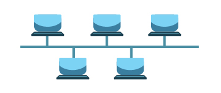
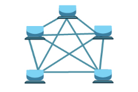
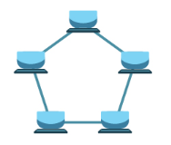
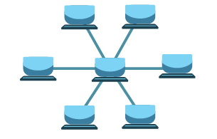
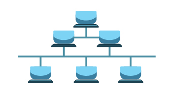

Topologias em Redes
Na disciplina de Redes de Computadores, existe um conteúdo em específico chamado Topologias, aonde nos mostra sobre como funciona a organização de dispositivos conectados em uma rede, ou seja, tanto fisicamente (em cabos) quanto logicamnente (no fluxo de dados).
Hoje aprenderemos alguns dos principais tipos de topologias.
Index:
- Qual a diferença da física para a lógica?
- Barramento
- Anel
- Malha
- Estrela
- Árvore
- Avaliação do conteúdo
Qual a diferença entre topologia física e lógica?
A topologia física consiste-se na organização de como os cabos de rede são conectados entre os componentes, como computadores, roteadores e switchs.
Já a topologia lógica consiste-se em como os dados fluem dentro da rede e de um dispositivo para outro, independentemente das conexões físicas entre os dispositivos.
É importante frizar que, em uma rede, a topologia física pode ser uma e a topolgia lógica outra, exemplo: Em uma rede, a topologia física é em árvore, mas a topologia lógica é em estrela.
Tipos de Topologias:
- Barramento
- Ponto a Ponto
- Anel
- Estrela
- Árvore
A topologia em barramento consiste em um cabo de rede central onde está conectado todos os outros dispositivos.

É uma topologia simples e fácil de ser inserida, porém essa topologia traz algumas desvantagens como alto nível de congestionamento e a falha na confiabilidade, visto que se o cabo central sofrer algum problema, a rede inteira estará comprometida.
Já a topologia ponto a ponto consiste em conectar todos os dispositivos da rede entre si, por isso do nome, está tudo ligado de ponto a ponto.

É uma topologia muito positiva, já que o tráfego é bem mais controlado e não tem muito congestionamento. Porém, a desvantagem dela é seu alto custo, ou seja, para poder aderir a essa topologia é necessário investir em muitos cabos para ligar todos os dispositivos.
A topologia em formato de anel quer dizer que os dispositivos conectados nas redes são conectados entre si de uma forma em que um computador se liga no próximo computador, e no anterior também.

Desta forma, para uma informação ir de um dispositivo até outro dispositivo distante, será necessário que ele percorra por todos os dispositivos no caminho até chegar ao seu destino.
A vantagem da topologia em anel é que não existe congestionamento, já que não possui caminhos compartilhados. A desvantagem é que quando um dispositivo apresenta problema, a rede toda é impactada.
Aqui, todos os dispositivos são conectados em um único ponto central, geralmente sendo um switch.

A topologia tem ponto positivo na fácil manutenção, visto que é fácil encontrar o erro em algum dispositivo com problemas. Porém, a rede fica dependente do dispositivo central, que se ocorrer alguma falha, resultará em um impacto na rede toda.
A topologia em árvore combina elementos das topologias em estrela e barramento, criando um sistema de hierarquia. Começa com um dispositivo no topo e vai se ramificando em várias sub-redes, como galhos de uma árvore.

É uma topologia muito eficiente com controle de tráfego e de fácil manutenção, porém também é dependente do dispositivo que cuida das sub-redes.